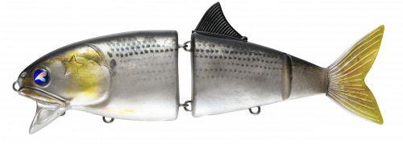
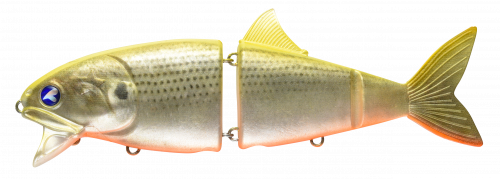
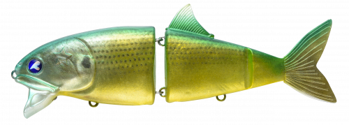
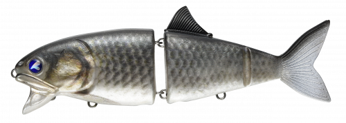

コノ野郎180
（KONOYAROU 180）
コノ野郎180はBlueBlue（ブルーブルー）のスイムベイトです。
まるで本物の魚のように滑らかに動く3分割ボディで、ゆっくり巻くだけで大きく水を動かす「大型ベイトパターンの最終兵器」。スローではのたうち回るようなヒラ打ち、ノーマルスピードでは強大な波動を出しながらくねくねと泳ぎ、圧倒的な存在感でアピールします。

画像出典:BlueBlue公式HP
スペック
- メーカー
- BlueBlue（ブルーブルー）
- タイプ
- スイムベイト（3分割ジョイント）
- 全長
- 180mm
- 自重
- 68g（個体差あり）
- フック
- #1×2
- リング
- #4
- ターゲット
- シーバス・青物
- 価格
- 4,200円（税別）
▼今すぐチェック

コノ野郎180の特徴
本物の魚のような3分割ボディで、大型ベイトパターンを攻略
-
滑らかに動く3分割ボディ
3分割のボディが本物の魚のように滑らかに動きます。スローではのたうち回るようなヒラ打ち、ロッドを立てれば水面に背びれを出して、弱った大型ベイトを演出できます。
-
水に絡みつく強い波動
ノーマルスピードでは強大な波動を周囲に撒き散らしながら、水に絡みつくようにくねくねと泳ぎ、圧倒的な存在感でアピールします。
-
上下2つのアイで誘い分け
上のアイは姿勢よく安定して泳がせたいとき、下のアイは頭上がりで水面で大きく動かしたいときに。下のアイにオモリを付ければ、深い場所でも底付近で使えます。
コノ野郎180の使い方
基本はスローのただ巻き。ゆっくり巻くだけで大きく水を動かし、ヒラ打ちしながら泳ぎます。
ロッドを立てて巻けば、水面に背びれを出して弱った魚を演出できます。深い場所では、上のアイにラインを結び、下のアイに5〜10gのオモリを付けて沈めてから巻きましょう。
コノ野郎180の得意な状況
コノシロやボラなど大型ベイトが入っている秋〜冬の河川・河口・港湾。あらゆる手を尽くしても反応が取れないときや、大型のシーバスだけを狙いたいときに向いています。
ワンポイント
ワーム素材でもっとナチュラルに見せたいときはボラコン150、強い波動で広く探りたいときはゼッパー140Fと、同じBlueBlueの大型ベイト用ルアーでローテーションしましょう。
BlueBlueの大型ベイト向けルアーの使い分け
| モデル | 全長／自重 | 得意な場面 |
|---|---|---|
| コノ野郎180 | 180mm／68g | 3分割ボディで本物の魚のように泳ぐ最終兵器（本記事のモデル） |
| ボラコン150 | 150mm／48g | ワーム素材のジョイントで、ボラそっくりに泳がせたいときに |
| ゼッパー140F | 140mm／36g | 激しいワイドアクションのビッグミノー |
| フォースガイル160F | 160mm／50g | 幅の広いS字で強く寄せるペンシル |
どれも大型ベイトパターン向けのルアー。アクションの強さや見せ方で使い分けましょう。
人気カラー
公式ラインナップから4色を紹介します（カラー名は公式の表記のまま）。

#03 まんまコノ野郎!!コノシロそのもののナチュラルカラー。コノシロパターンの基準に。

#04 チャートバックコノ野郎!!チャートの背中のコノシロカラー。濁りやローライトに。

#05 ミドキン野郎!!緑と金のカラー。ボラやコノシロの群れの中で変化をつけたいときに。

#08 フナ野郎!!フナを意識したカラー。河川の上流側や、淡水が混じるエリアに。
画像出典:BlueBlue公式HP
コノ野郎180に似ているルアー
-
 ボラコン150
ブルーブルー
詳細はこちら＞
ボラコン150
ブルーブルー
詳細はこちら＞
全長150mm・自重48gのジョイントスイムミノー。同じBlueBlueで、ワーム素材でナチュラルに見せたいときに。
-
 ゼッパー140F
ブルーブルー
詳細はこちら＞
ゼッパー140F
ブルーブルー
詳細はこちら＞
全長140mm・自重36gのビッグミノー。強い波動とフラッシングで広く探りたいときに。
-
 カゲロウ155F
メガバス
詳細はこちら＞
カゲロウ155F
メガバス
詳細はこちら＞
全長155mm・自重39gのシャローランナー。大型ベイトパターンで、もっと遠くまで飛ばしたいときに。